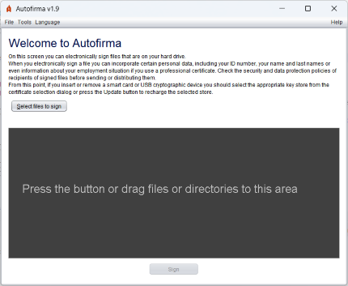
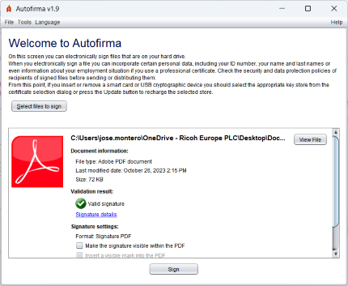
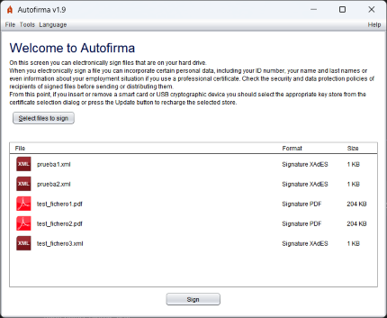
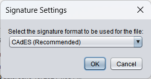

From this screen you can select the documents or directories you want to sign.

You can select one or more documents by pressing the "Select Files to Sign" button or by clamping the documents and/or directories to the indicated area (the dark gray box).
When loading the documents to be signed, you will be shown certain details about them, which will vary depending on whether a single or multiple file is selected:
 
In the box enabled to drag the documents that you wish to sign, the information of the file(s) you selected will have appeared.
If you only select a file and have a default application for this type of document, you will see the "View file" button with which you can open it. In addition, you will be provided with information regarding the file and the signature to be generated (format, signature attributes and signature options). If you have set up data for the selected signature format to be included in the signature itself, such as the signature policy, a "See all..." link will be displayed from which you will be able to visualize all defined signature attributes.
If multiple files or directories were selected, you can double-click them to open or press with the secondary mouse button to view the options of "View File" and "View Signature Attributes".
The "Sign" button at the bottom of the screen will allow you to sign the document. If your operating system’s certificate store has not yet finished charging, the button will be disabled and with an animated waiting image. In that case, please wait for it to disappear and the button is enabled.
Once the button is pressed, the program will generate a signature for each selected document. For each type of document, the signature will be generated in the format established from the preferences panel.
If you want to sign in a different format the file already selected, you will be allowed to modify by selecting the "(Change)" link next to the format information. Selecting it will open the following window where you can choose the desired format:

The types of document distinguished and the signature formats supported are shown in the table below:
| Type of document | Icon | Signature formats (highlighted by default) |
|---|---|---|
| PAdES, CAdES and XAdES. | ||
| XML | XAdES and CAdES. | |
| Electronic invoice | Invoice E, CAdES and XAdES. | |
| OOXML | CAdES, XAdES and OOXML (Office Open XML) | |
| ODF | CAdES, XAdES and ODF (Open document format). | |
| Other documents | CAdES and XAdES. | |
| Electronic signature | Same as the original signature. |
As an exception to the latter case, an electronic invoice already signed in Invoice E format cannot be re-signed.
When signing files, a window will be displayed for the saved of the generated signature if only one document or dialogue was selected to select the exit directory if several were selected. After saving the signatures, the signature detail screen will be displayed.
The signature process can be altered by the plugins installed in Autofirma. See the plugins management section to learn more about them.
In addition to the buttons and graphics elements, you can also use the menu bar or the following keyboard accelerators:
Control (in macOS) + S: Select file. Control (in macOS) + F: Sign the selected file.You can set the signature format to use for each type of file and the particularities of these formats, as well as the overall application behavior, from the preferences panel available through the Options menu.
Some signature formats or options may give rise to additional configuration options in the signature window itself:
The PDF signature of a single document allows the signature to be displayed in the document. To do this, it will be necessary to check the box "Make the signature visible within the PDF".
It is also possible to insert a mark visible in the PDF at the time of signing. This option will modify the PDF by adding the selected image and then sign it. To use this function you will need to check the "Insert visible mark in the PDF" box. This box will be disabled if the PDF document is already signed, as the insertion of a mark would invalidate previous signatures.
Another option available would be to generate a certified PDF, it will be possible if the signature to be made is PAdES format and the document is not previously signed. It is done by ticking the "Generate certified PDF" box, and the certification level selected in the list of options under that box applies to the document. The list of options will be disabled if the "Generate certified PDF" box is not enabled.
These options will be marked or not by default as set out in the preferences panel. When selecting any of these boxes, we will be shown the Properties panel visible in PDF.
By adding a new binary or XML signature to a signature document, you can configure whether the new signature will be made on the document itself (co-signature) or on the already introduced signatures (counter-affirms). This option can be configured from the preferences panel of the CAdES and XAdES formats. When you apply, Autofirma will show the user a "Advanced Options" button from which you can directly access these settings.
In the process of signing multiple documents, any configuration that requires a halt to the signing process is omitted. Thus, for example, the PDF password request will be omitted and the visible signature and mark configuration will be ordered only once and will apply to all documents with the same configuration.